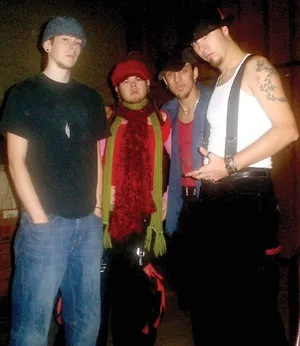
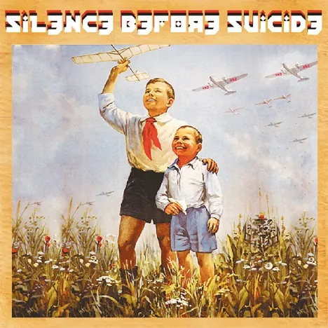

Ask the members of the band Silence Before Suicide what kind of music they play and watch them squirm.
"I really don't think we slide into any genre," 32-year-old vocalist Jake Dillon said.
"I don't know, maybe new metal?" 28-year-old guitarist Rob Burton offered. Then he laughed at the label.
Dillon made a face. Bass player Mike West, 30, hadn't arrived yet. And 22-year-old drummer Corey Disbennett couldn't attend the interview.
"Maybe political metal?" Burton asked.
Silence Before Suicide is part of a growing music scene in Galesburg committed to developing original material and performing live. The foursome, which founded the band in October 2006, is part of a three-band show Saturday at Billiard's on Main. The other bands performing include Mindefect and Fierce Amateurs. The show will start by 8:30 p.m. and the $5 cover is good for all three sets.
In fact, the members of Silence Before Suicide don't really care about music genres — or anyone's particular politics. They see the entire effort to codify music as corporate packaging to facilitate consumption.
"One thing we are not interested in is making music that is least offensive to the greatest number of people," West said after he arrived. "I want to think our songs talk about things people should think about. In the United States we are supposed to ask questions. I don't think enough people do that.
"I think the government and corporations would rather see us act like sheep."
Burton picked up on the theme.
"We would like to challenge people to take a look at the kind of injustices perpetrated by governments and corporations," he said. "Our message is to look at what's going on around you."
Dillon summed it up.
"You try to show people a door. It's up to them to walk through it," he said. "We think people are afraid to talk about things — we would like to encourage conversation. We sing about things like the elections, health care, the troops who have gone to war and not come back."
Saturday's show will feature a new wrinkle.
"We decided to do a short straw show," West said. "Basically, the bands will draw a straw to determine who plays first — short straw goes first. Then we'll draw to see who goes next and who is last."
Dillon explained the motivation behind the short-straw show.
"Basically, when we have done multi-band shows before, fans come to see the band they know, then they leave," he said. "This way, no will know the order. We think, hopefully, people will want to listen even if it isn't 'their music.' This way they will be exposed to something new. Maybe they will find something they like."
West and the rest of his bandmates are committed to more than just their own music. They even founded a label — called Groove Union — and set up a recording studio on the corner of North and Academy streets. Fierce Amateurs is one of the bands that has recorded there.
"I think 10 years ago the music scene was driven by cover bands — and I think cover bands are still a really important part of Galesburg's music scene," West said. "And metal has become big at Billiard's. But I also host an open mic night there and I see plenty of people doing jazz, rock, folk and rap at that.
"The scene is diverse and I think it has a lot to offer anyone who is interested is seeing live music."
During the interview, West held up the June 11 edition of Rolling Stone magazine. The cover featured Lady Gaga bathed in pink light and bubbles.
"This what we are talking about," West said. "This is airbrushed reality. We don't want to format and formulate. There are blemishes in our music and plenty of other music."
The band also will sell a special edition of its self-titled album. It will include three tracks featuring words from John F. Kennedy, Dwight Eisenhower's Farewell Speech, Ronald Reagan, Franklin Roosevelt and President Barack Obama.

Silence Before Suicide will host a listening party at 8 tonight in The Psychohall at 2279 Grand Ave. The cover is $2 and the bands Raised By The System and Lethal By Default will perform.
tloewy@register-mail.com